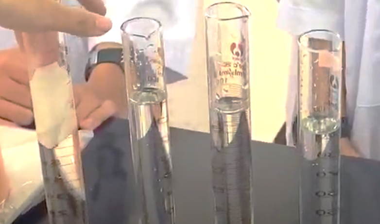

Section 1 - Stages of Food Processing


This simulation of placing bananas and crackers in the Ziplock closely mirrors the first phase of the digestive
process. The food is ingested and
stored soon in the stomach. This helps the students in visualizing and engaging
with the concept of the stomach as a reservoir.
The addition of water serves as the representation of the saliva, initiating the start of mechanical digestion
by moistening the food. This vividly
illustrated the role of saliva in breaking down complex substances.
The stomach is represented with the zip-locked in this process.
Much like the stomach, the zip-lock encapsulates the undigested food.
Crushing of the food represents the beginning of digestion in our stomachs. This is the visual representation
of how food breaks down
into smaller bits for the subsequent steps in the process
Adding the orange juice in this laboratory exercise represents the simulation of the enzymes during the first
part of the process, offering
visual representation of the natural chemicals in our stomach
Biochemistry-wise, we can say that the elements that are found inside a food are the carbohydrates,
proteins, fats and vital nutrients
that contribute to our overall health.
The flowing out of liquid from the stocking creates a dynamic representation of the absorption process.
The nutrients will now assimilate
into the bloodstream, preparing for the distribution throughout the body.
The tray represents either the circulatory systems (bloodstream or lymphatic channels) transferring nutrients gained from digestion
or the organism itself receiving these nutrients.
The residual, undigested food or the partially solidified content stored within the stockings or the gastrointestinal tract.
This residue
potentially comprises the substances needed for excretion.
The propulsion of the partially solidified substance emulates the process of eliminating undigested
food through the anus.
Section 2 - Simulation of Absorption

The paper towel with 4 folds absorbed the largest amount of water. Similar to the digestive tract's reliance on
surface area for
nutrient absorption, the paper towel with four folds exhibited heightened water absorption due to increased surface area.
Similar to the paper towels, the small intestine within the digestive system utilizes villi and microvilli with structural folds in its lining
that significantly increase the surface area.
This organ's structure enhances the efficient absorption of nutrie
Section 3: Simulation of Bile Action
Bile,a viscous yellow-green digestive fluid synthesized by the liver and is stored in the gallbladder, plays a pivotal role in chemical
digestion, particularly in the breakdown of fats for utilization
by the body. Additionally, it is essential for the elimination of
substances deemed unusable by the body.
Section 4: Conclusion and Reflection
The Digestive System Simulation exercise provided us with the vital importance of comprehending digestive processes. From the initial mechanical breakdown to the simulated absorption and the chemical digestion made by the bile, each phase authentically replicated the functions of our digestive system. The experiment involving paper towels draws a similarity to nutrient absorption in the small intestine, highlighting the use of villi and microvilli in relevance of surface area. Through this comprehensive exploration, the laboratory activity not only enhances understanding but also offers practical insights and more appreciation of the intricate workings and functions of the digestive system.Looking beyond this lab activity, we can say that the practical applications of this simulation are extensive just like being informed with our daily choices. Understanding the role of saliva and the efficiency of nutrient absorption directly impacts our dietary decisions. Finally, in this exploration of ours, we acquire insights that are beyond the academic realm, appreciating the extraordinary processes in each system in order to sustain and to energize our body.